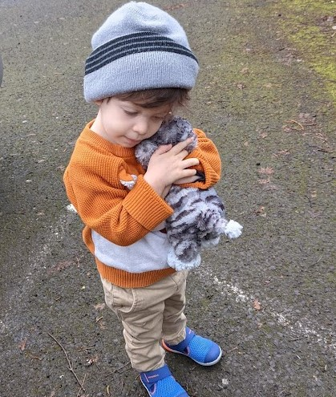

Meow-Meow was a lonely creature, orphaned and living in the Portland Ikea until one day, a little boy decided he wanted to take him home. He has since become the boy's best friend, and resides happily in Portland, OR.

Thanks for checking out my page! Next time you're at Ikea, think about adopting a cute pet from the toy section!